输入时更整洁
暂停原因采用紧凑输入区，键盘出现时显示恢复时间摘要，触屏焦点更柔和。
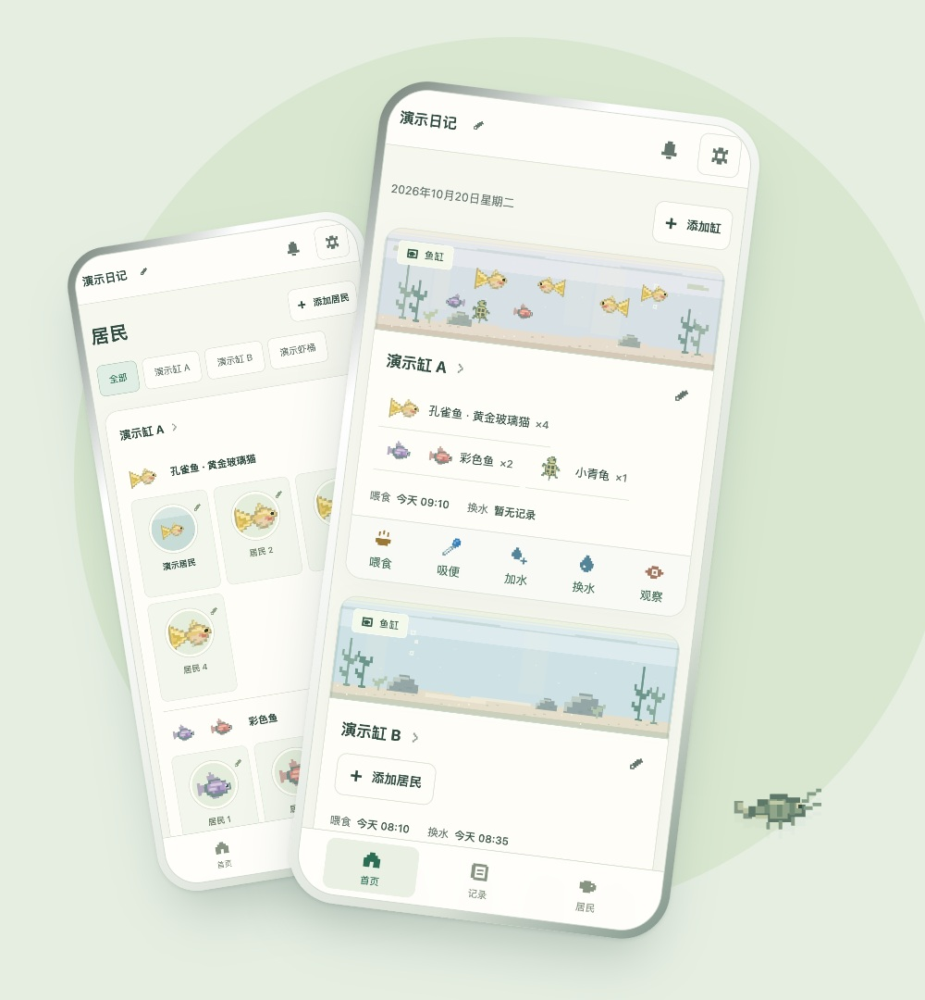
A LITTLE AQUA LIFE
32 秒，认识你的水族日记。
产品短片 · 真实界面剪辑 · 原创配乐。点击播放后有声音。
下载 MP4 ↓界面与录像使用独立演示资料。名字、记录为示例，照片附件为项目像素插画；首次打开日记仍为空白。
从像素居民开始，展示喂食记录、居民姓名与头像、共享时间轴和维护月历，最后展示提醒暂停及恢复安排。手机外框为展示排版；屏幕内容来自真实 App。没有旁白，字幕不依赖声音。
01 / 随手记录
喂食、吸便、加水，记下此刻。
换水多少，也能一起留下。
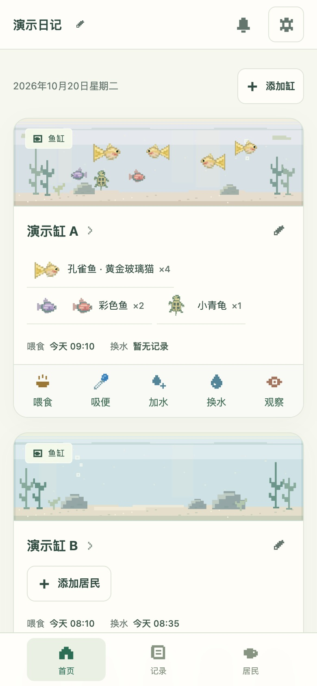
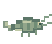
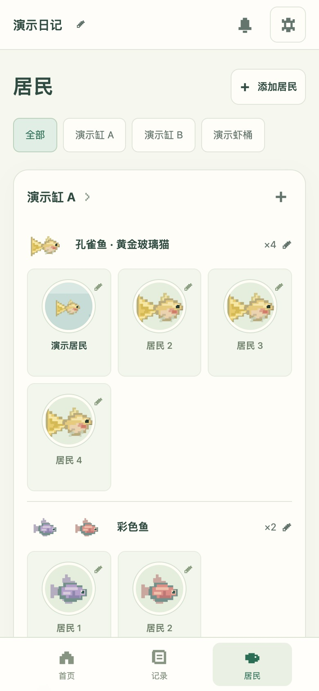
02 / 认识居民
选择像素形象，给它取个名字。
也能用自己的照片，留住它的模样。
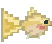
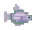
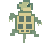
取名字 · 裁剪头像 · 自由排序
03 / 回看日常
按缸对照时间轴。
在月历里，看见维护的节奏。

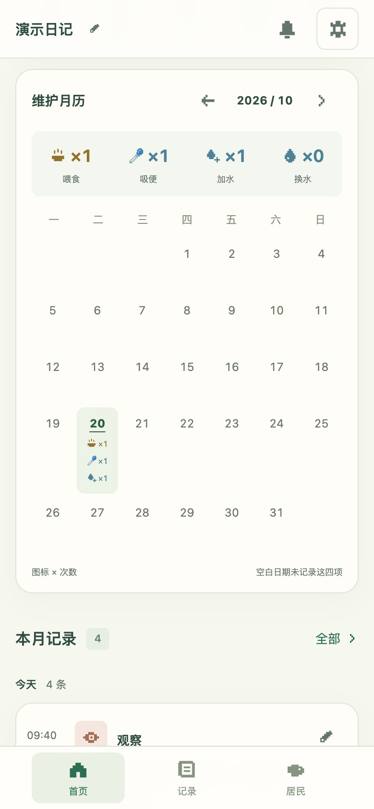
04 / 按自己的节奏
创建提醒，也能暂停几天。
写下原因，到了恢复日再继续。
App 内提醒 · 支持导出日历文件
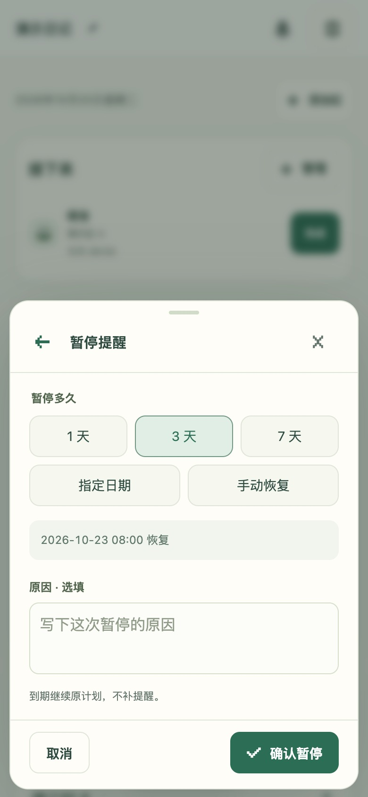
给你的日常，一点小小仪式感
创建自己的缸，迎接第一位居民。
开始我的日记 ↗Safari 打开日记，选择「共享 → 添加到主屏幕」，开启「作为网页 App 打开」再添加。首次联网并完成缓存后可离线记录。Apple 官方说明 ↗
日记与照片保存在当前浏览器。不同网址、设备和浏览器分别保存，没有云同步。清除网站数据前请导出「备份（含照片）」。从旧网址迁移时，先在旧网址备份，再在新网址恢复；恢复会替换当前数据。
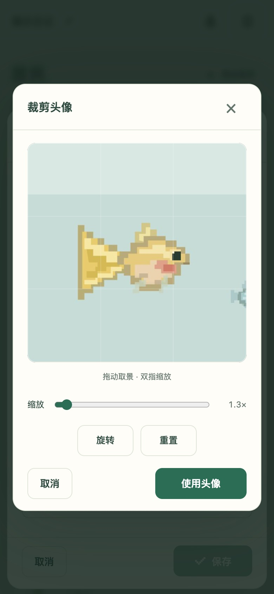
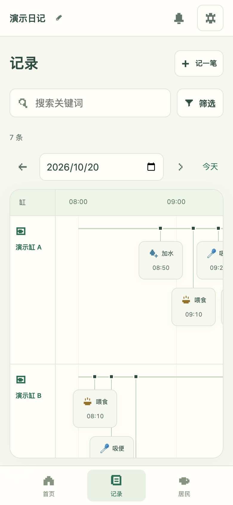
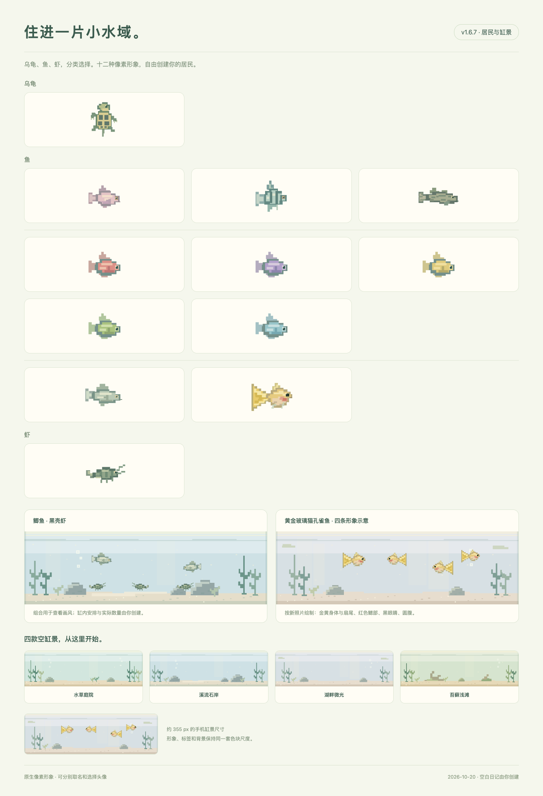
提醒在 App 内显示，没有后台系统推送。导出的日历文件需手动导入；App 中暂停或修改任务不会同步到已导入的日历。移动端验证使用 Chrome 模拟视口，尚未进行实体 iPhone 与 Safari 真机验证。
本次更新
2026-10-20
暂停原因采用紧凑输入区，键盘出现时显示恢复时间摘要，触屏焦点更柔和。
标题、滚动内容和操作栏独立布局，修复输入遮挡和底部空隙。